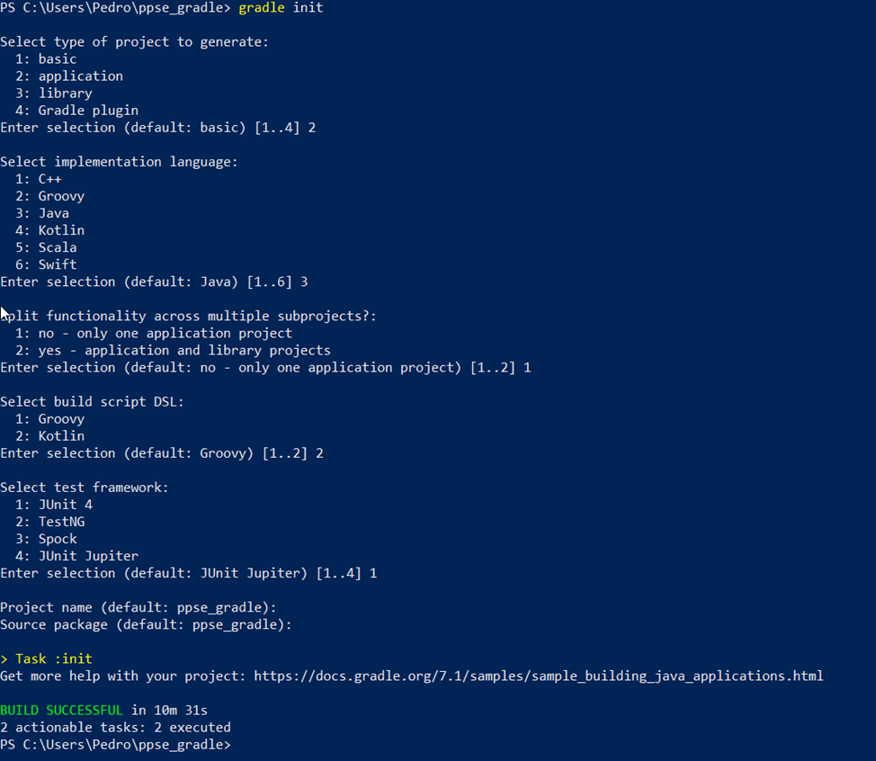
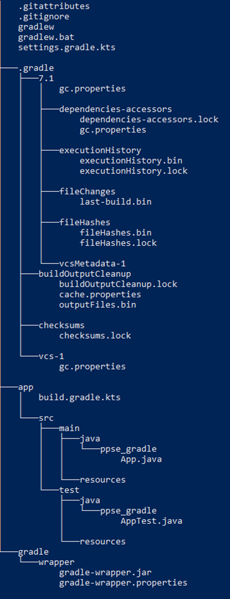

Conocer y dominar todas las herramientas anteriores y otras muchas que no se han tratado es complicado, se puede realizar configuraciones y construcciones sencillas, pero construir y desplegar aplicaciones grandes y complejas implica controlar en profundidad la herramienta y sus opciones.
En este punto se realiza un ejemplo con la herramienta Gradle especializada en Java y el resto de lenguajes que se ejecutan sobre la JVM.
Instalación
Es necesario tener instalado el SDK de Java en su versión 8 o superior. Existen diferentes formas de instalarlo:
- Usando la aplicación SDKMAN.
- Con el gestor de paquete Homebrew.
- Instalación manual, que se puede encontrar en: https://gradle.org/releases/. Descomprimir en el directorio que se desee y En el caso de Windows descargar, descomprimir y actualizar el path. Para comprobar ejecutar el comando gradle -v
Creación de proyecto
- Crear el directorio que aloja el proyecto.
- Dentro del directorio ejecutar:
gradle init- Responder a las preguntas que plantea el comando, como el tipo de proyecto, el lenguaje a utilizar, si contendrá subproyectos, el lenguaje SDL para los guiones y el framework de pruebas.

Al listar el directorio se puede observar los diferentes ficheros y carpetas creados:

Algunos de los ficheros más destacados:
- settings.grandle.kts. Indica el nombre de la aplicación y qué elementos lo componen.
- app/buid.grandle.kts. Contiene diferentes secciones en el que se indica los plugins, los repositorios, las dependencias del proyecto( librerías externas y el método principal de la aplicación.
Para ejecutar la aplicación simplemente ejecutar el comando:
gradle run
Para construir la aplicación:
gradle build
Observar como dentro de la carpeta app ha creado la carpeta build que contiene el proyecto construido, incluso versiones de distribución en la carpeta distributions.
Para añadir librerías modificar el fichero build.grandle.kts y añadir las dependencias necesarias, por ejemplo la librerías JavaFX para diseño de interfaces:
plugins {
id("org.openjfx.javafxplugin") version "0.0.10"
application
}
repositories {
mavenCentral()
}
dependencies {
testImplementation("junit:junit:4.13.2") // This dependency is used by the application.
implementation("com.google.guava:guava:30.1-jre")
}
javafx {
version = "16"
modules("javafx.controls", "javafx.fxml")
}
application {
mainClass.set("ppse_gradle3.App")
}
Existen multitud de comandos y acciones a ejecutar, algunas de las más destacadas:
- run
- build.
- jar.
- distTar
- distzip.
- installdist.
- javadoc.
- test.
Lenguaje de programación en un ámbito de aplicación específico.